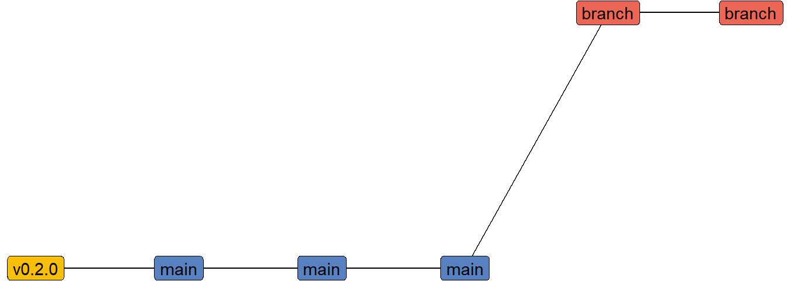
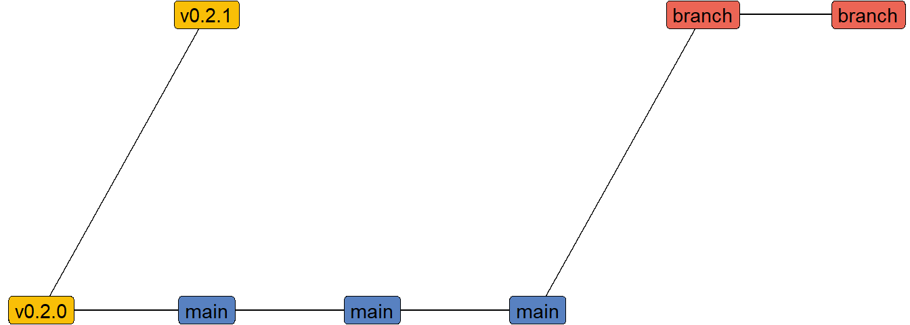
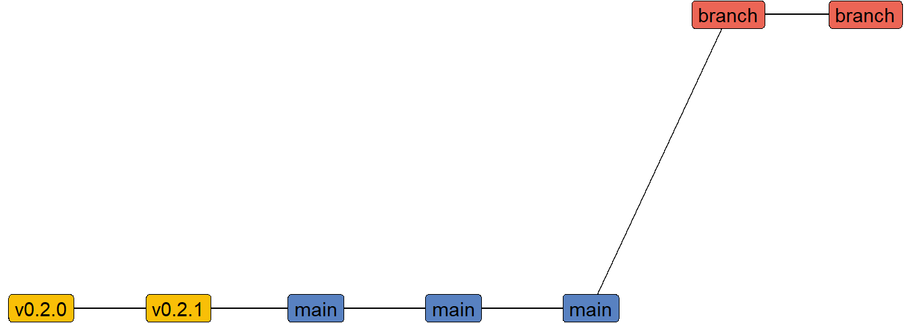

Creating a hotfix with git
git
tutorial
I recently discovered a bug in a code-base which needed to be fixed and deployed back to production A.S.A.P., but since the last release the code has moved on significantly. The history looks something a bit like:
That is, we have a tag which is the code that is currently in production (which we need to patch), a number of commits after that tag to main (which were separate branches merged via pull requests), and a current development branch.
I need to somehow: 1. go back to the tagged release, 2. check that code out, 3. patch that code, 4. commit this change, but insert the commit before all of the new commits after the tag
There are at least two ways that I know to do this, one would be with an interactive rebase, but I used a slightly longer method, but one I feel is a little less likely to get wrong.
Below are the step’s that I took. One thing I should note is this worked well for my particular issue because the change didn’t cause any merge conflicts later on.
Fixing my codebase
First, we need to checkout the tag
git checkout -b hotfix v0.2.0This creates a new branch called hotfix off of the tag v0.2.0.
Now that I have the code base checked out at the point I need to fix, I can make the change that is needed, and commit the change
git add [FILENAME]
git commit -m "fixes the code"(Obviously, I used the actual file name and gave a better commit message. I Promise 😝)
Now my code is fixed, I create a new tag for this “release”, as well as push the code to production (this step is omitted here)
git tag v0.2.1 -m "version 0.2.0"At this point, our history looks something like

What we want to do is break the link between main and v0.2.0, instead attaching tov0.2.1. First though, I want to make sure that if I make a mistake, I’m not making it on the main branch.
git checkout main
git checkout -b apply-hotfixThen we can fix our history using the rebase command
git rebase hotfixWhat this does is it rolls back to the point where the branch that we are rebasing (apply-hotfix) and the hotfix branch both share a common commit (v0.2.0 tag). It then applies the commits in the hotfix branch, before reapplying the commits from apply-hotfix (a.k.a. the main branch).
One thing to note, if you have any merge conflicts created by your fix, then the rebase will stop and ask you to fix the merge conflicts. There is some information in the GitHub doc’s for [resolving merge conflicts after a Git rebase][2].
[2]: https://docs.github.com/en/get-started/using-git/resolving-merge-conflicts-after-a-git-rebase
At this point, we can check that the commit history looks correct
git log v0.2.0..HEADIf we are happy, then we can apply this to the main branch. I do this by renaming the apply-hotfix branch as main. First, you have to delete the main branch to allow us to rename the branch.
git branch -D main
git branch -m mainWe also need to update the other branches to use the new main branch
git checkout branch
git rebase mainNow, we should have a history like
